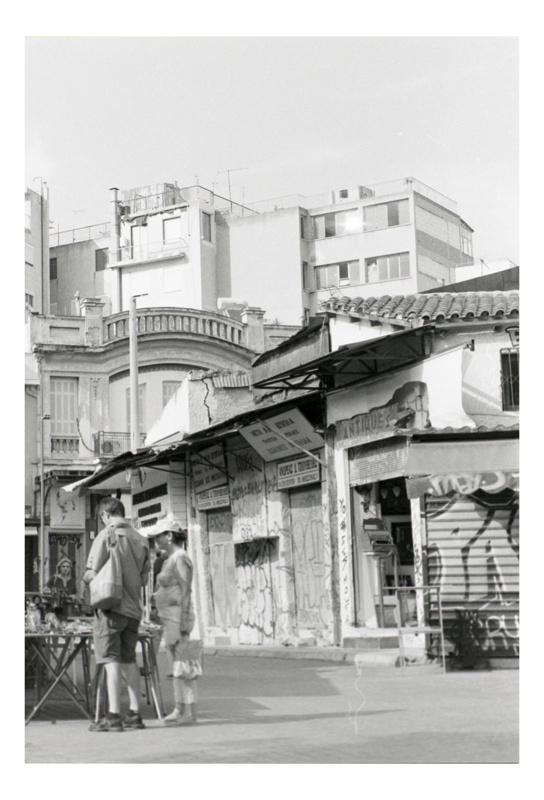

Strasbourg
Published: February 2026
Strasbourg sits on the seam between French and German traditions, and its streets show it in every detail—half-timbered houses, sandstone gothic, canals threading through tight medieval lanes. This set leans into that quiet bilingual atmosphere.

The cathedral's pink sandstone dominates the skyline, but the small alleys of La Petite France—mills, footbridges, slate roofs—offer the more intimate frames. Reflections from the Ill river soften the geometry and turn ordinary corners into compositions.
Most of the photographs in this series were taken on overcast winter mornings, when crowds are thin and the diffuse light flatters stone and water alike.